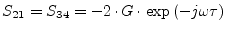
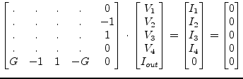

The models of the controlled sources contain the transfer factor  .
It is complex because of the delay time
.
It is complex because of the delay time  and frequency
and frequency  .
.
| (9.162) |
During a DC analysis (frequency zero) it becomes real because the exponent factor is unity.
The voltage-dependent current source (VCCS), as shown in fig. 9.8, is determined by the following equation which introduces one more unknown in the MNA matrix.
The new unknown variable  must be considered by the four
remaining simple equations.
must be considered by the four
remaining simple equations.
| (9.164) |
And in matrix representation this is:
As you can see the last row which has been added by the VCCS represents the determining equation (9.166). The additional right hand column in the matrix keeps the system consistent.
When pivotising the above MNA stamp (9.168) the
additional row and column can be saved ensuring  keeps finite (the
pivot element must be non-zero). Both representations are equivalent.
If
keeps finite (the
pivot element must be non-zero). Both representations are equivalent.
If  is zero the below representation must be used.
is zero the below representation must be used.
| (9.166) |
The scattering matrix of the voltage controlled current source
writes as follows ( is time delay).
is time delay).
| (9.167) |
| (9.168) |
|  | (9.169) |
| (9.170) |
The current-dependent current source (CCCS), as shown in fig. 9.9, is determined by the following equation which introduces one more unknown in the MNA matrix.
The new unknown variable  must be considered by the four
remaining simple equations.
must be considered by the four
remaining simple equations.
| (9.172) |
And in matrix representation this is:
| (9.173) |
The scattering matrix of the current controlled current source
writes as follows ( is time delay).
is time delay).
| (9.174) |
| (9.175) |
| (9.176) |
| (9.177) |
The voltage-dependent voltage source (VCVS), as shown in fig. 9.10, is determined by the following equation which introduces one more unknown in the MNA matrix.
The new unknown variable  must be considered by the four
remaining simple equations.
must be considered by the four
remaining simple equations.
| (9.179) |
And in matrix representation this is:
|  | (9.180) |
The scattering matrix of the voltage controlled voltage source
writes as follows ( is time delay).
is time delay).
| (9.181) |
| (9.182) |
| (9.183) |
| (9.184) |
The current-dependent voltage source (CCVS), as shown in fig. 9.11, is determined by the following equations which introduce two more unknowns in the MNA matrix.
| (9.185) |
The new unknown variables  and
and  must be considered by
the four remaining simple equations.
must be considered by
the four remaining simple equations.
| (9.187) |
The matrix representation needs to be augmented by two more new rows (for the new unknown variables) and their corresponding columns.
| (9.188) |
The scattering matrix of the current controlled voltage source
writes as follows ( is time delay).
is time delay).
| (9.189) |
| (9.190) |
| (9.191) |
| (9.192) |